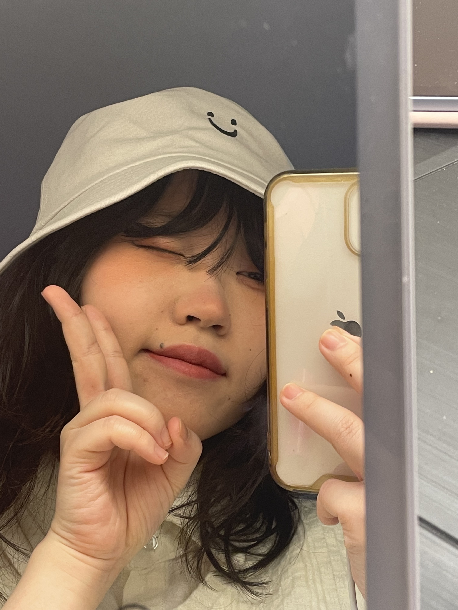
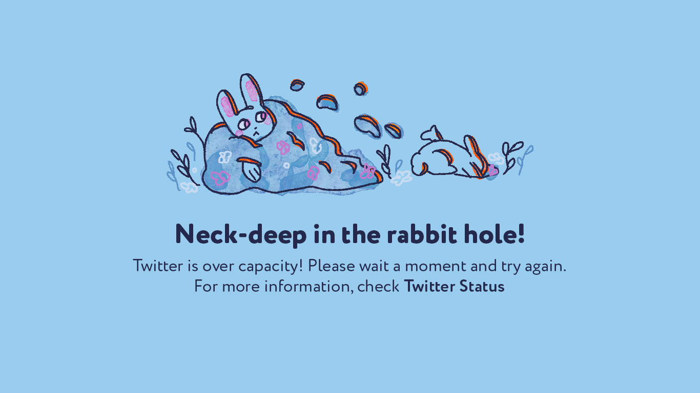
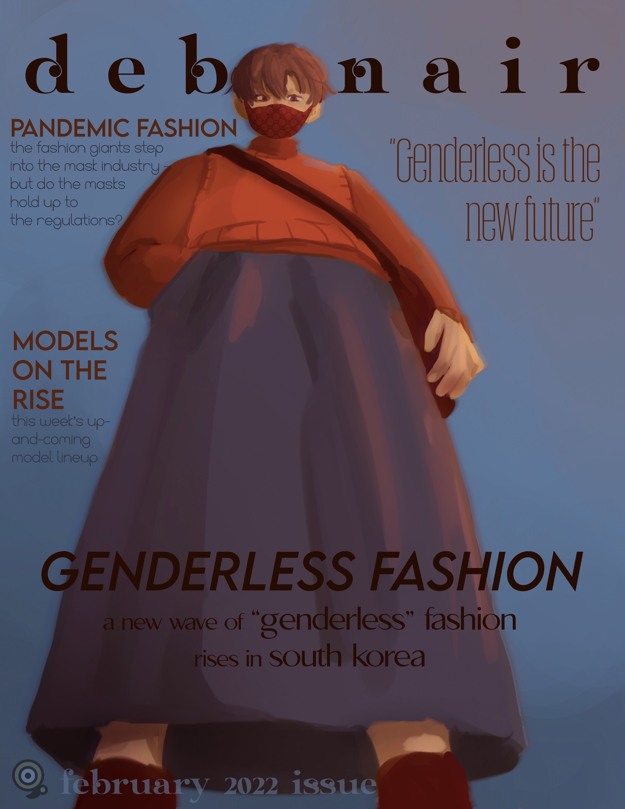
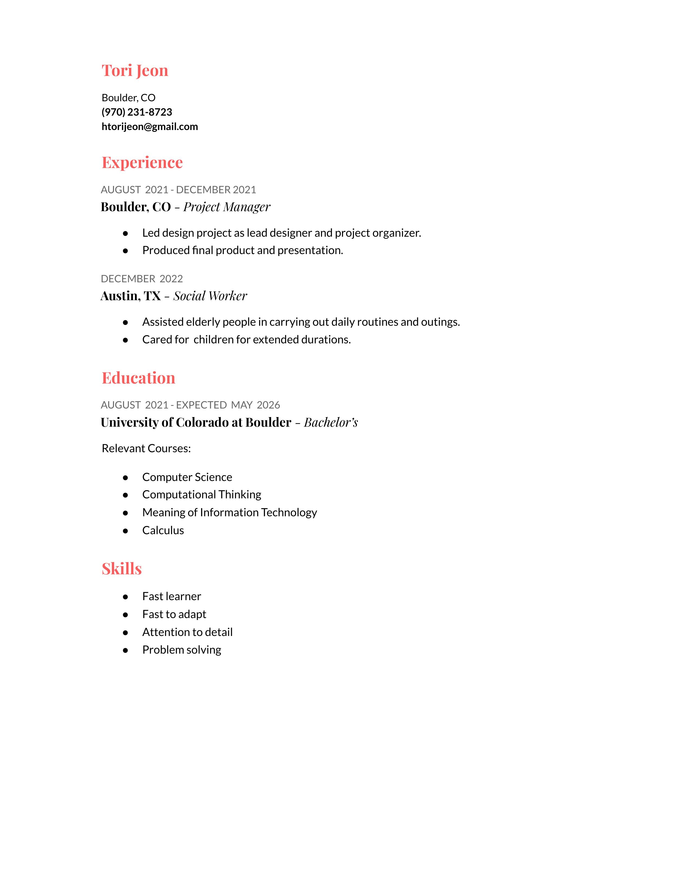

Tori Jeon
About Me

My name is Tori Jeon and I am studying Creative Technology and Design as well as Computer Science at CU Boulder. I am particularly interested in digital illustration (I have done some freelance work before!) as well as design. I usually draw or play video games in my free time, but if I'm feeling productive I do drawing studies. I am a Korean American, and I have lived in Korea for about 1/3 of my life; Korean culture is something I love incorporating into any of my works if possible.
Gallery

A concept for a Twitter error page. I wanted to create a cute, endearing design that also conveys the error to the user. I used a common idiom for easy understanding, and used the Twitter blue and complementary colors.

A concept for a fake magazine cover. I was given a specific color palette, and had to utilise only the given colors. The magazine name was also a random adjective, so I decided on a high-fashion magazine in the vein of something like Vogue or Vanity Fair. I thought a low angle with the model looking down seemed like an interesting angle that would catch people's eyes. At the time, I was also very interested in ?genderless fashion," a fashion style that had begun to trend in South Korea at the time, and decided to make the magazine's issue surrounding genderless fashion. The model and background are illustrated, and the text was overlayed.

As a Korean American, I think it is important to bridge cultures and enjoy educating people on Korean culture. Because of this, I have created various pieces of art that are appropriations of iconic and well-known western artworks. These appropriations, however, are all drawn in a traditional Korean style and feature political commentary by replacing the subjects of the paintings. They are all done on paper purposefully weathered to imitate old Korean artworks and with a brush pen to imitate the brush strokes of traditional East Asian art. This piece in particular is an appropriation of The Raft of Medusa by Theodore Gericault, and it is a depiction of the 2014 Sewol Ferry sinking.
Resume
